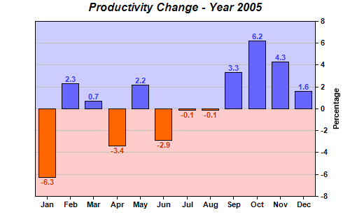

This example demonstrates a bar chart containing positive and negative data, represented by different colors.
In this example, the two colors of the plot area background are configured using background zones, while the bar colors are configured by splitting the bars into two layers.
The following is the command line version of the code in "cppdemo/posnegbar". The MFC version of the code is in "mfcdemo/mfcdemo". The Qt Widgets version of the code is in "qtdemo/qtdemo". The QML/Qt Quick version of the code is in "qmldemo/qmldemo".
#include "chartdir.h"
int main(int argc, char *argv[])
{
// The data for the bar chart
double data[] = {-6.3, 2.3, 0.7, -3.4, 2.2, -2.9, -0.1, -0.1, 3.3, 6.2, 4.3, 1.6};
const int data_size = (int)(sizeof(data)/sizeof(*data));
// The labels for the bar chart
const char* labels[] = {"Jan", "Feb", "Mar", "Apr", "May", "Jun", "Jul", "Aug", "Sep", "Oct",
"Nov", "Dec"};
const int labels_size = (int)(sizeof(labels)/sizeof(*labels));
// Create a XYChart object of size 500 x 320 pixels
XYChart* c = new XYChart(500, 320);
// Add a title to the chart using Arial Bold Italic font
c->addTitle("Productivity Change - Year 2005", "Arial Bold Italic");
// Set the plotarea at (50, 30) and of size 400 x 250 pixels
c->setPlotArea(50, 30, 400, 250);
// Add a bar layer to the chart using the Overlay data combine method
BarLayer* layer = c->addBarLayer(Chart::Overlay);
// Select positive data and add it as data set with blue (6666ff) color
layer->addDataSet(ArrayMath(DoubleArray(data, data_size)).selectGEZ(DoubleArray(),
Chart::NoValue), 0x6666ff);
// Select negative data and add it as data set with orange (ff6600) color
layer->addDataSet(ArrayMath(DoubleArray(data, data_size)).selectLTZ(DoubleArray(),
Chart::NoValue), 0xff6600);
// Add labels to the top of the bar using 8 pt Arial Bold font. The font color is configured to
// be red (0xcc3300) below zero, and blue (0x3333ff) above zero.
layer->setAggregateLabelStyle("Arial Bold", 8, layer->yZoneColor(0, 0xcc3300, 0x3333ff));
// Set the labels on the x axis and use Arial Bold as the label font
c->xAxis()->setLabels(StringArray(labels, labels_size))->setFontStyle("Arial Bold");
// Draw the y axis on the right of the plot area
c->setYAxisOnRight(true);
// Use Arial Bold as the y axis label font
c->yAxis()->setLabelStyle("Arial Bold");
// Add a title to the y axis
c->yAxis()->setTitle("Percentage");
// Add a light blue (0xccccff) zone for positive part of the plot area
c->yAxis()->addZone(0, 9999, 0xccccff);
// Add a pink (0xffffcc) zone for negative part of the plot area
c->yAxis()->addZone(-9999, 0, 0xffcccc);
// Output the chart
c->makeChart("posnegbar.png");
//free up resources
delete c;
return 0;
}
© 2023 Advanced Software Engineering Limited. All rights reserved.